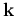
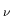
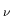

The output files of the pw.x code are not modified by the ph.x code.
Each image of ph.x creates a new directory called outdir/_ph#
where it writes its files. # is an integer equal to 0
in a calculation with one image or to the image number when the
-nimage flag is used.
There are two sets of files written
by ph.x in the outdir/_ph# directories: unformatted files
containing internal arrays, and .xml
files containing partial results or tensors. The former are in
outdir/_ph# if the input flag lqdir=.false., or in
separate subdirectories outdir/_ph#/prefix.q_#iq,
where #iq is the number of the q point. Note that if
lqdir=.false. (default is lqdir=elph)
the disk occupation is reduced but the files of each q point are
rewritten by the following q so it is not possible to run an
electron-phonon calculation with trans=.false. and
ldisp=.true. after generating the induced potentials for a mesh of
q points.
The .xml files calculated by each image are in the
outdir/_ph#/prefix.phsave directory for all q-vectors and
irreps calculated by that images. Before closing the image calculation
the content of all the outdir/_ph#/prefix.phsave
directories are copied into outdir/_ph0/prefix.phsave directory, so
it is possible to recover the calculation without using images.
The ph.x code reads the output of pw.x from the outdir directory.
The wavefunctions are in outdir/prefix.wfc files
while information on the structure of the solid and on the pw.x
run are in the outdir/prefix.save directory. The wavefunctions are
also in this directory if pw.x was run with the wf_collect=.true.
flag. These files are not modified by ph.x.
At a finite q vector, ph.x runs its own instance of pw.x to compute the bands and saves the results into
the outdir/_ph#/prefix.q_#iq directory (lqdir=.true.) or
in outdir/_ph#. The charge density is copied inside
these directories before calculating the bands. The output of pw.x is
in files called outdir/_ph#/prefix.q_#iq/prefix.wfc and in
the directory
outdir/_ph#/prefix.q_#iq/prefix.save (lqdir=.true.),
or in outdir/_ph#/prefix.wfc and in
outdir/_ph#/prefix.save (lqdir=.false.). With
lqdir=.false. ph.x saves in
outdir/_ph#/prefix.bar the
non self-consistent part of the right hand side of the linear system,
in outdir/_ph#/prefix.dwf the change of the wavefunctions.
The files outdir/_ph#/ prefix.igk contain the
 +
lists as in the pw.x run.
With US or PAW, files called outdir/_ph#/prefix.prd
contain the induced charge density, for all modes.
Only the part that does not depend on the perturbed wavefunctions
is contained in these files. With electric field perturbations
there are also files called outdir/_ph#/prefix.com that
contain
Pcx|
 and are needed for the calculation
of the Born effective charges.
The mixing routine saves its data in files called
outdir/_ph#/prefix.mixd.
The status of ph.x is saved at each iteration in files called
outdir/_ph#/prefix.recover. These files can be used
to recover the run. All these unformatted files are saved in
outdir/_ph#/prefix.q_#iq directory when lqdir=.true..
Using the input flag reduce_io=.true. these files can be
kept in memory and saved only at the end of the run if necessary.
and are needed for the calculation
of the Born effective charges.
The mixing routine saves its data in files called
outdir/_ph#/prefix.mixd.
The status of ph.x is saved at each iteration in files called
outdir/_ph#/prefix.recover. These files can be used
to recover the run. All these unformatted files are saved in
outdir/_ph#/prefix.q_#iq directory when lqdir=.true..
Using the input flag reduce_io=.true. these files can be
kept in memory and saved only at the end of the run if necessary.
In parallel calculations, previous files are split into several files that have a final number. Each number labels the processor that wrote the file. There are as many files as processors per image.
The files with the dynamical matrices are written in the directory in which ph.x is started and are called fildyn#iq where #iq is the q-vector number in a dispersion calculation, or is not added in a single-q calculation. Only one copy of this file is written in a parallel run. When the -nimage option is used some of these files might be empty (if the corresponding q point has been divided between two or more images). The results are collected running ph.x another time (with recover=.true.) without images.
Moreover ph.x opens a directory called outdir/_ph#/prefix.phsave. This directory contains the partial information on the calculation. These files can be used to recover a run also when the recover file is corrupted. In the directory outdir/_ph#/prefix.phsave the files are in .xml format. Note that this directory is always in outdir/_ph#/ also when lqdir=.true.. There are several files:
control_ph.xml contains information on the flags that control what ph.x calculates. The content of this file is used mainly for checking purposes. The code reads these flags in input and does not need to reread them from file, but a recover run in which these flags change is not allowed. control_ph.xml contains also the mesh of q-vectors and their coordinates. This file is written only in a non recovered calculation from the routine check_initial_status after the creation of the q-vector mesh. It is read, if recover=.true., at the beginning of the run by phq_readin.
status_run.xml contains information that tell ph.x at which point the code stopped. It has information on the current q vector, the current frequency, and a recover code that tells ph.x if it has to expect a recover file and which routine produced this recover file. status_run.xml file is rewritten each time the phonon code reaches a point from which a new recover is possible. It is read, if recover=.true., at the beginning of the run by phq_readin.
If some routine wrote it, tensors.xml contains the tensors that
have been calculated. Possible tensors are: dielectric constant,
Born effective charges calculated as derivative of the forces (EU),
Born effective charges calculated as derivative of the polarization (UE),
raman tensor, electro-optic coefficient. This file is written by the
routines that calculate the tensors.
It is read by the routine phq_recover, if recover=.true.
and the q vector is  .
.
If polariz wrote it, polariz.xml contains the frequency
dependent polarizabilities for the frequencies calculated so far.
It is read by the routine
phq_recover, if recover=.true. and the q vector
is  .
.
patterns.#iq.xml are files written for each q vector (#iq is its number). They contain the information on the displacement patterns that transform according to irreducible representations of the small group of q: number of irreducible representations, their dimensions, the displacement patterns and the name of the irreducible representation to which each mode belongs. It is written in nonrecover runs by the routine init_representations. It is read for each q vector by phq_setup. The routine reads the data of the file with iq=current_iq.
dynmat.#iq.0.xml contains the part of the dynamical matrix calculated by dynmat0 that does not depend on the perturbed wavefunctions. It is written by dynmat0 and read only in recover runs by phq_recover.
dynmat.#iq.#irr.xml
contains the contribution to the dynamical matrix at the
q vector #iq of
the representation #irr.
Note that these files can be calculated independently even on
different machines and collected in a single directory (see the GRID example),
but it is necessary to calculate the patterns file in a single machine and
send it to all the machine where the calculation is run to be sure that
all machines use the same displacement patterns.
When the files dynmat.#iq.#irr.xml are present for all
#irr of a given #iq the dynamical matrix for that
 can be calculated. If all the #irr of a given symmetry
for a given #iq are present,
the partial dynamical matrix that can be constructed with this information
can be diagonalized and the frequencies of the modes of that symmetry can
be calculated (using the ldiag=.true. flag).
These files are written by phqscf after calculating the
contribution of the representation to the dynamical matrix by
drhodv. They are read only in recover runs by the routine
phq_recover.
can be calculated. If all the #irr of a given symmetry
for a given #iq are present,
the partial dynamical matrix that can be constructed with this information
can be diagonalized and the frequencies of the modes of that symmetry can
be calculated (using the ldiag=.true. flag).
These files are written by phqscf after calculating the
contribution of the representation to the dynamical matrix by
drhodv. They are read only in recover runs by the routine
phq_recover.
elph.#iq.#irr.xml contains the contribution to the electron
phonon coefficients
at the q vector #iq of the representation #irr.
These files are written by elphel and contain the quantities
g (, i, j)
(see User Manual). They are read in recover runs by the routine
phq_recover.
(, i, j)
(see User Manual). They are read in recover runs by the routine
phq_recover.